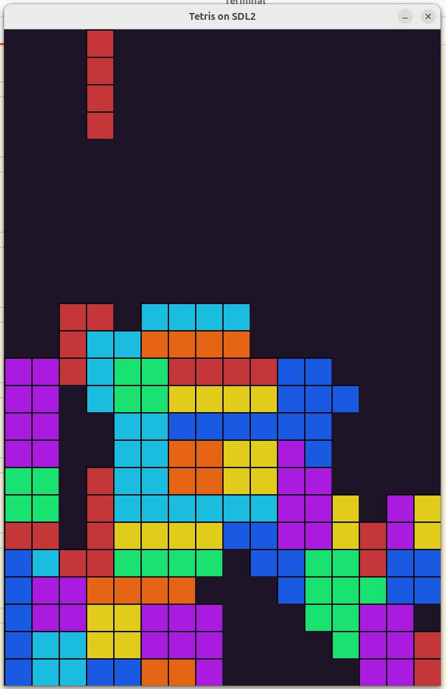

2025-05-18
https://github.com/bakineugene/tetris_c/commit/89d9af0feefaf62edd5d1db96ba02a0c22e30215
Цель - сделать несложную игрушку на микроконтроллере.
В качестве первой “жертвы” выбрал “тетрис”.
Но чтобы проще было отлаживать решил для начала написать вариант для
десктопа, а уже потом переписать отдельные части, чтобы выполнялось на
микроконтроллере.
Вспоминаю С.
https://github.com/bakineugene/tetris_c/commit/32aaedda94ab2c851b88a176707eae4a5cd794a5
https://github.com/bakineugene/tetris_c/commit/49cac47be6dba49a0a13e76958bf09f49f627536
Добавил управление элементами (кроме вращения) и исчезновение заполненных слоев
Кроме того решил, что у меня будет 2 * 3 матрицы - то есть экран 16 * 24
Кстати, фигуры в тетрисе называются тетрамино (https://ru.wikipedia.org/wiki/Тетрамино) Вот здесь есть summary по различным правилам вращения - https://strategywiki.org/wiki/Tetris/Rotation_systems
https://github.com/bakineugene/tetris_c/commit/c684568582064311f1e900fc1ac5bf37d2d11750 Хоть это и только для отладки, не удержался и добавил цвета

https://github.com/bakineugene/tetris_c/commit/4dc5c9f18619cdcdc389fa246969430b0c6982c3 https://github.com/bakineugene/tetris_c/commit/25eaeb3b80740c765d14d1866322c1fdc6851d5c
Имплементация вращения по правилам современного тетриса